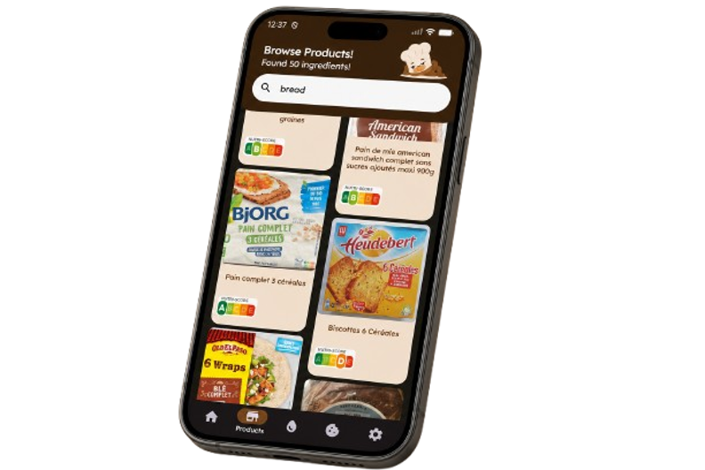

Measure it the right way!

Measure ingredients accurately using weight-based units.
Access a wide range of ingredient information.
Create and customize your own baking recipes.
Share your recipes with other Gramly users.
Gramly is a mobile baking companion that helps users
create, measure, and share recipes using accurate weight-based
ingredient measurements for more consistent baking results.